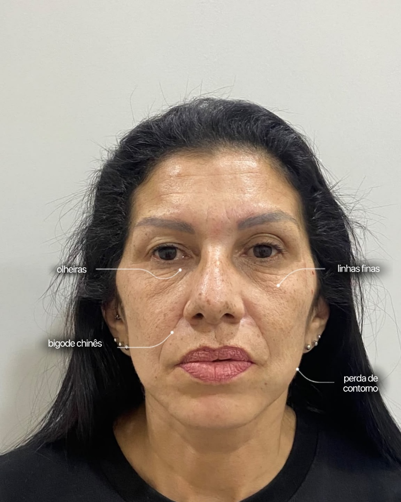

Harmonia & Proporção
Equilíbrio delicado entre testa, olhos, nariz e queixo, corrigindo assimetrias naturais sem transformar ou congelar sua expressão.
Suavize os sinais do tempo e valorize os contornos do seu rosto com um tratamento personalizado.
CUIDADO INDIVIDUALIZADO
Procedimentos planejados para valorizar sua beleza natural, com discrição e respeito total à sua identidade.
Equilíbrio delicado entre testa, olhos, nariz e queixo, corrigindo assimetrias naturais sem transformar ou congelar sua expressão.
Realce refinado da linha da mandíbula e do queixo, criando uma transição nítida com o pescoço e reduzindo a sensação visual de flacidez.
Suporte sutil para as maçãs do rosto com leve efeito lifting, devolvendo o aspecto descansado e suavizando o bigode chinês.
Atenuação das marcas na testa, entre as sobrancelhas e ao redor dos olhos, trazendo leveza e frescor ao olhar sem tirar sua espontaneidade.
CASOS CLÍNICOS AUTÊNTICOS
Registros autênticos de pacientes da clínica, planejados para cada anatomia.


ANATOMIA FACIAL & POSSIBILIDADES
Tratamento personalizado para cada área da face com rigor e naturalidade.

Registro autêntico de paciente na Pink Luxo: demarcação milimétrica de queixas anatômicas e resultado com harmonia natural.
Suavização das rugas que marcam a testa ao falar, alívio da marquinha de tensão entre as sobrancelhas ("cara de brava") e dos pés de galinha ao sorrir. Seu olhar ganha descanso e serenidade, sem congelar suas expressões.
Sustentação delicada das maçãs do rosto com efeito lifting leve, que devolve o suporte jovem da face e ameniza a profundidade do vinco ao redor da boca de forma sutil e elegante.
Definição nítida do maxilar e alinhamento do queixo para valorizar o perfil e desenhar uma separação limpa com o pescoço, reduzindo a sensação visual de flacidez com muita elegância.
Hidratação profunda, contorno bem desenhado e volume sutil e proporcional ao formato da sua boca, além de suavizar as linhas finas ao redor dos lábios sem qualquer exagero.
PROTOCOLO EXCLUSIVO PINK LUXO
O foco deste planejamento foi devolver um aspecto descansado e harmônico ao rosto, respeitando integralmente a identidade da paciente.
Cada etapa é pensada para seu conforto, privacidade e total segurança.
Ouvimos o que te incomoda no espelho com calma e analisamos seu rosto em repouso e ao sorrir, para identificar os pontos certos a suavizar.
Apresentamos uma conduta sob medida para sua face, indicando substâncias homologadas na medida exata para um resultado discreto e elegante.
Procedimento rápido no consultório com anestésico tópico de alta eficácia e agulhas ultrafinas. Você retorna à sua rotina no mesmo dia.
Orientamos detalhadamente os cuidados pós-sessão e agendamos uma consulta de revisão para certificar a perfeita acomodação e harmonia.
Rua Tijuco Preto, 426 — Tatuapé · São Paulo. Atendimentos planejados com intervalos adequados para sua total privacidade e tranquilidade.
A CLÍNICA NO TATUAPÉ
Estética avançada no Tatuapé que une precisão técnica, discrição e atendimento acolhedor.
Trabalhamos exclusivamente com substâncias biocompatíveis homologadas pela Anvisa, com foco absoluto em segurança e harmonia natural.
Utilização estrita de produtos seguros com certificação e rastreabilidade total.
Tempo dedicado para esclarecer dúvidas e personalizar cada detalhe do plano.

EXPERIÊNCIA DAS PACIENTES
Avaliações reais de pacientes que realizaram procedimentos na clínica.
Clínica Pink Luxo no Tatuapé
"Fiz a harmonização facial na Pink Luxo e ficou muito natural! Tinha receio de ficar diferente ou artificial, mas meu rosto está descansado, jovem e leve. Super recomendo!"
"As marquinhas na testa me incomodavam muito nas fotos. A profissional foi super atenciosa, explicou cada detalhe e o resultado ficou incrível. Clínica limpa e acolhedora."
"Atendimento impecável! Não senti dor nenhuma durante a aplicação. O resultado valorizou meu rosto mantendo totalmente a minha identidade. Indico de olhos fechados."
LOCALIZAÇÃO & CONTATO
Espaço moderno e reservado na Rua Tijuco Preto, com fácil acesso no Tatuapé.
Rua Tijuco Preto, 426 — Tatuapé
São Paulo · SP · CEP 03316-000
Segunda a Sexta · 9h às 19h
Sábados · 9h às 15h
ESCLARECIMENTOS FREQUENTES
Tire suas principais dúvidas sobre cuidados, duração e segurança do procedimento.
A harmonização facial é um conjunto de procedimentos minimamente invasivos e personalizados — combinando relaxamento da musculatura facial e preenchimentos biocompatíveis à base de ácido hialurônico. O objetivo é equilibrar volumes, definir contornos e suavizar rugas, preservando integralmente a identidade e a expressividade natural de cada pessoa.
Não. Na Pink Luxo priorizamos a técnica de harmonização natural. Todas as dosagens e pontos de aplicação são calculados respeitando a espessura da pele e a anatomia muscular de cada paciente. Você conquista um visual jovem, iluminado e descansado, sem rigidez ou perda dos movimentos espontâneos.
O procedimento é bastante confortável. Aplicamos um anestésico tópico de alta eficácia previamente à sessão e utilizamos microcânulas e microagulhas de precisão máxima. A maioria das pacientes relata apenas uma leve sensação de pressão ou picadinha momentânea, sendo um protocolo extremamente tranquilo.
No caso do relaxamento muscular, os primeiros sinais aparecem entre 48h e 72h, com consolidação total em até 14 a 15 dias. Os preenchimentos oferecem sustentação perceptível de imediato, que se acomoda com máxima naturalidade ao longo das duas primeiras semanas. A durabilidade média varia de 4 a 6 meses para relaxamento e de 10 a 18 meses para preenchimentos, dependendo do metabolismo individual.
Não é necessário afastamento. Como se trata de um procedimento não cirúrgico, você pode retornar à sua rotina diária no mesmo dia. Recomendamos apenas evitar esforço físico intenso, exposição solar direta ou massagens faciais vigorosas nas primeiras 24 horas.
Por determinação dos conselhos de saúde e ética profissional, valores e planos de tratamento são apresentados após o exame clínico presencial. Durante sua avaliação personalizada, a especialista analisa detalhadamente sua face e apresenta as melhores opções para o seu objetivo de forma transparente e acolhedora.